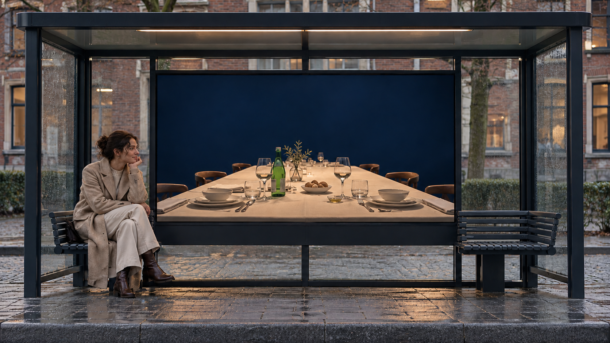
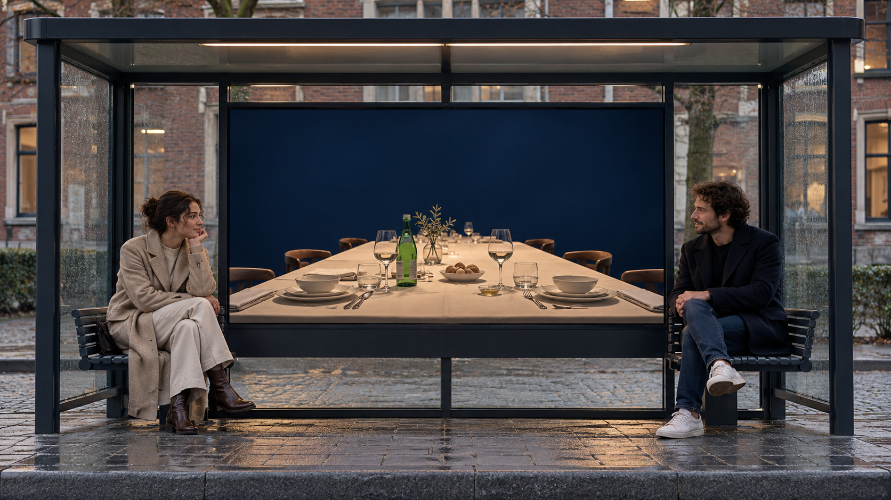

Van wachten naar ontmoeten.
Een virtuele tafel brengt twee onbekenden visueel samen. Hier begint Break Your Bubble.
Drie stappen: een lege plek, een tweede deelnemer en een gedeeld moment.
Eerste verkenning: twee wachtenden bij dezelfde halte. In de latere uitwerking ontmoeten deelnemers elkaar vanuit verschillende haltes. De overgang hieronder bedien je zelf.


Take a seat.
BREAK YOUR BUBBLE.
This is only the first course.
Een virtuele tafel brengt twee onbekenden visueel samen. Hier begint Break Your Bubble.
In een gigantisch liggend San Pellegrino-blik schuiven twee mensen aan een fysieke tafel aan. Vragen en een spel helpen het gesprek op gang.
Dezelfde tafel groeit uit tot een lange tafel-event in Tilburg. Een gedeelde plek voor nieuwe ontmoetingen.